/home1 — before: blank white
/home1 — after: hero + features + CTAcontent area, so nothing rendered.cms_layout_widget rows) now falls back to the active default layout instead of a blank page — "no layout → default; not seeded → default." (--plugin cms --full green.)GhrmCatalogueContent for the GHRM catalogue, the booking widgets, NativePricingPlans for native pricing). A page with its own seeded layout uses that layout (it overrides the default).| Page | Own layout | Renders via | Status | Content shown |
|---|---|---|---|---|
home1 | home-v1 | own (seeded) | ✓ renders | hero + features + CTA |
home2 | home-v2 | own (seeded) | ✓ renders | hero + pricing + testimonials |
landing2, landing3 | landing | own (seeded) | ✓ renders | hero + features + CTA + social-proof |
ghrm-software-catalogue, software, category, category/* | ghrm-software-catalogue | own (seeded) | ✓ renders | GHRM software catalogue |
ghrm-software-detail | ghrm-software-detail | own (seeded) | ✓ renders | GHRM package detail / install |
booking | booking-catalogue | own (seeded) | ✓ renders | booking catalogue (full list) |
booking-success, booking-cancel | booking-success/cancel | own (seeded) | ✓ renders | payment status |
booking-form, booking-resource-detail | booking-form / -detail | own (seeded) | ✓ widget renders, shows "Resource not found" | needs a resource in the URL (correct widget behaviour) |
pricing-native | native-pricing-page | own (seeded) | ✓ renders | "Choose Your Plan" native pricing |
features | content-page | own (body) | ✓ renders | features list (page body added) |
/home1 — before: blank white/home1 — after: hero + features + CTA
/ghrm-software-catalogue — before: blank white/ghrm-software-catalogue — after: GHRM catalogue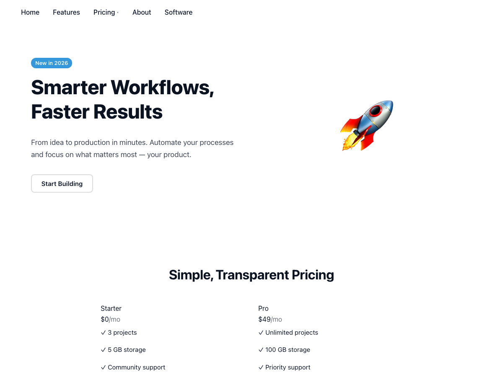
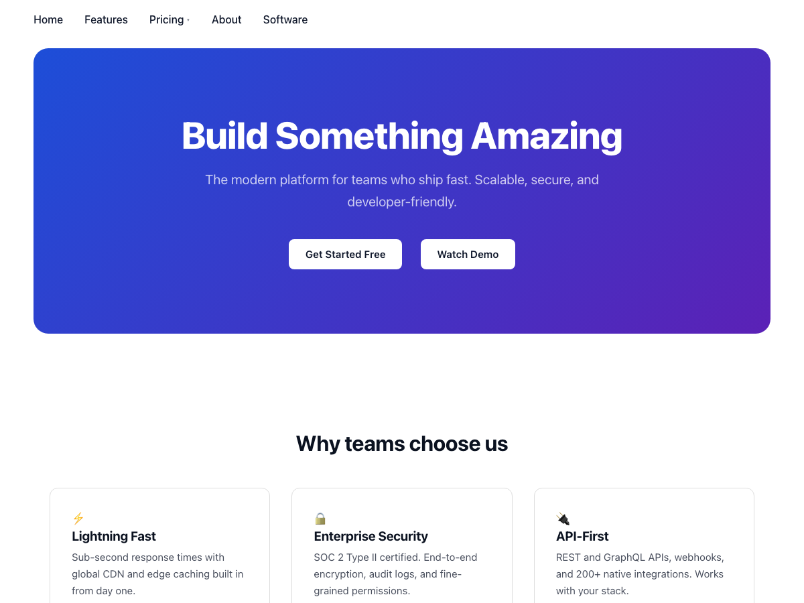

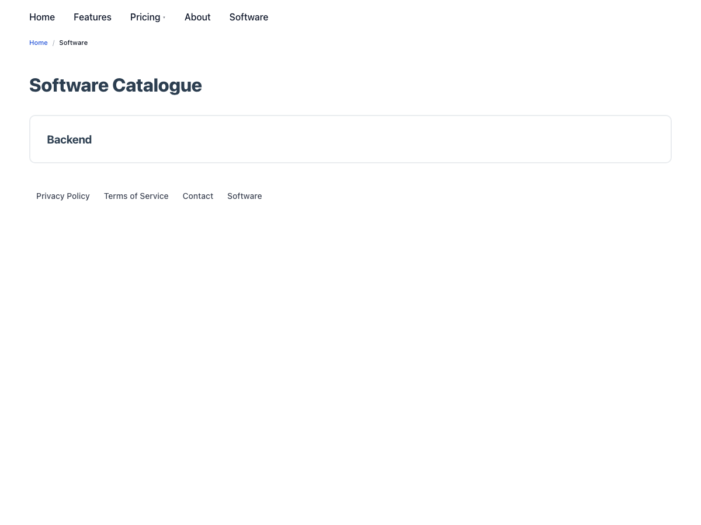
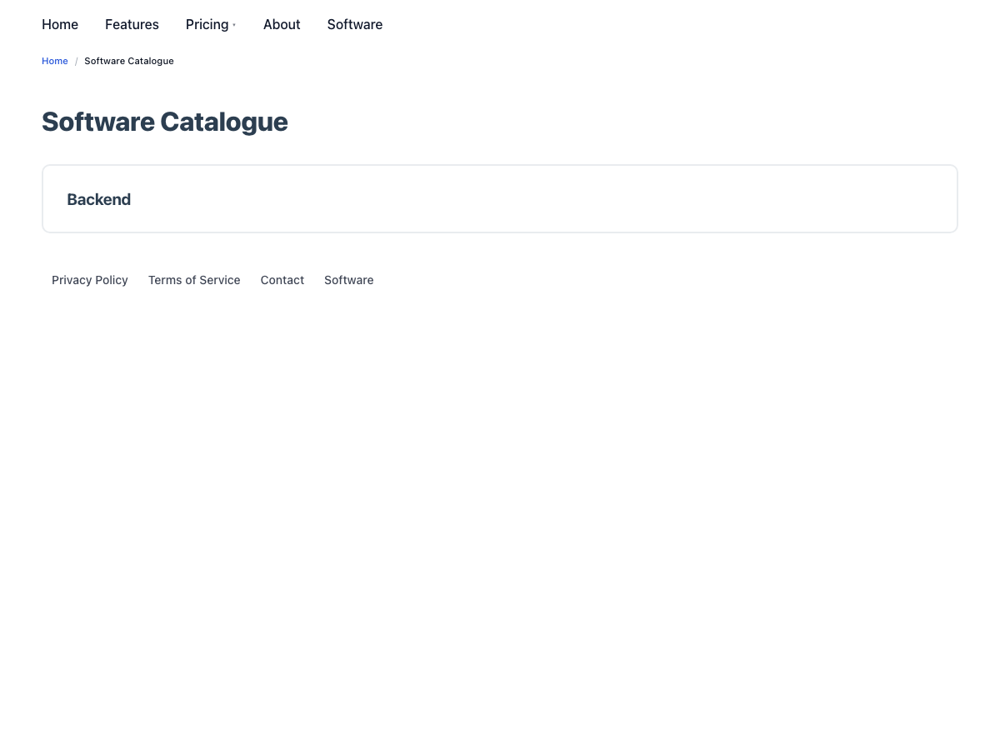
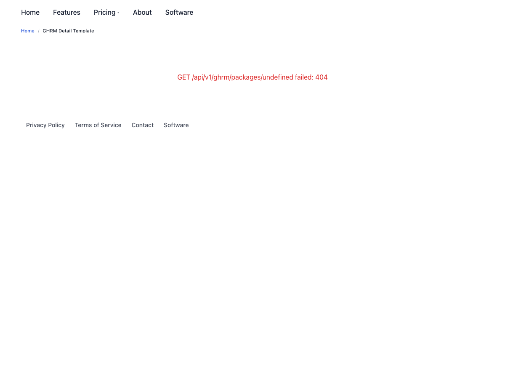
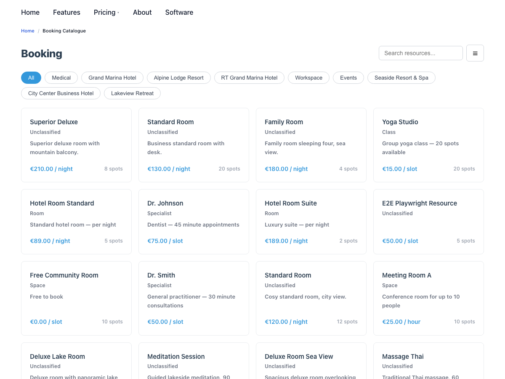
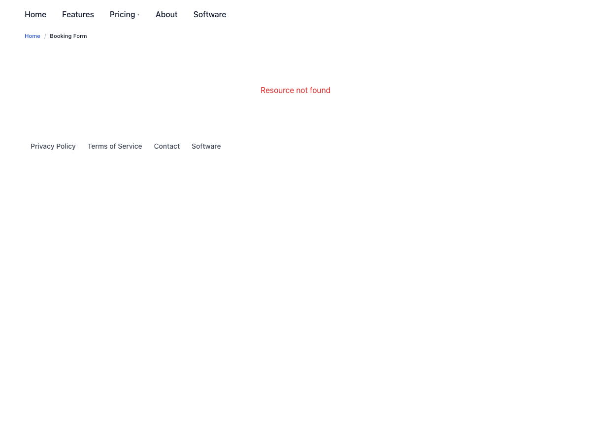
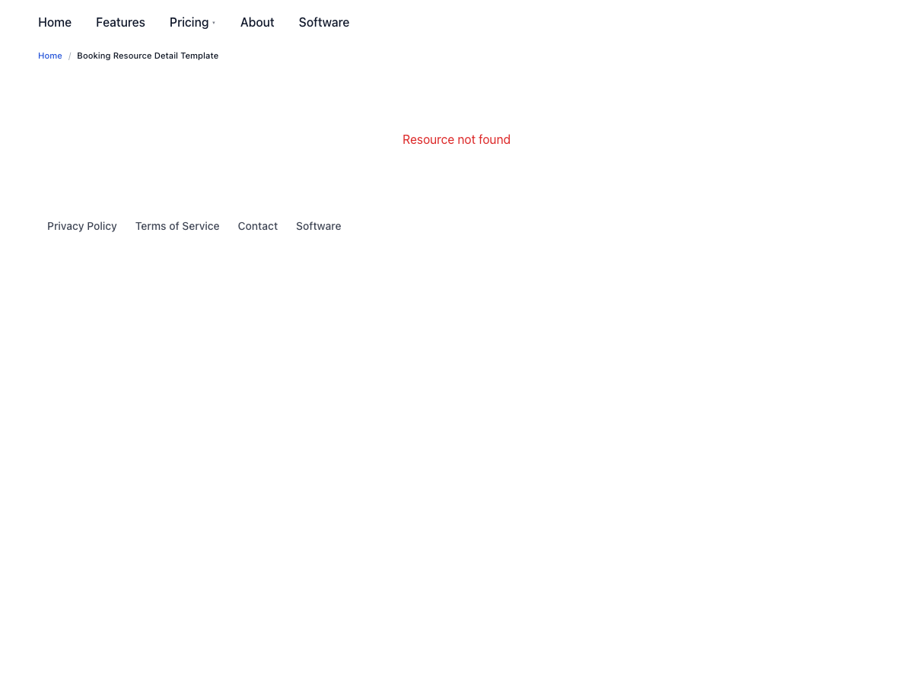
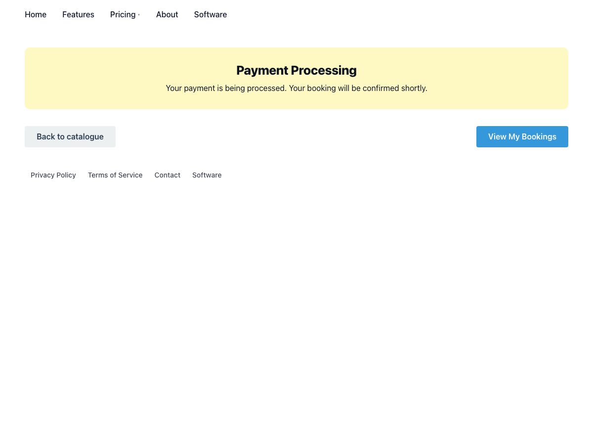
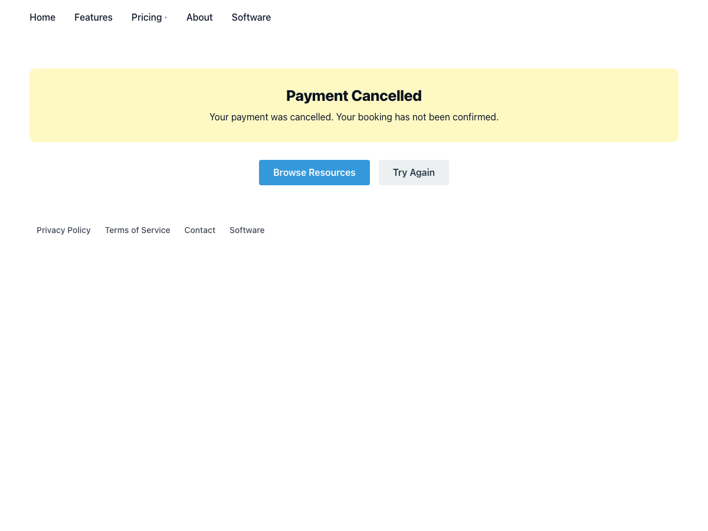
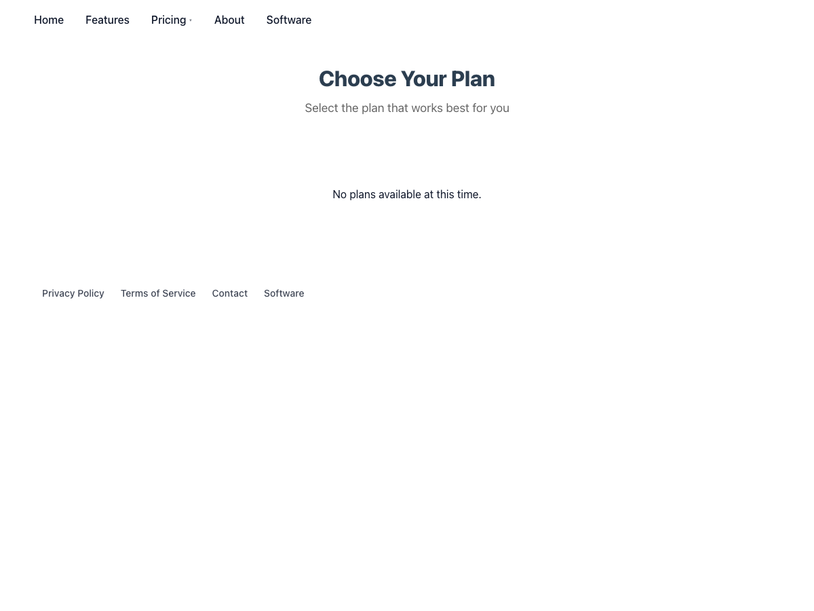
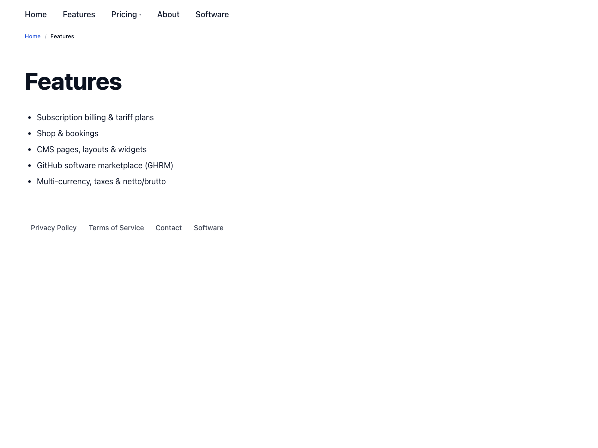
features via its page body.booking-form / booking-resource-detail show "Resource not found" when visited without a resource in the URL — this is the widget's correct context-required behaviour, not a placement gap.cms_layout_widget table (dev DB). Now that the cms_layouts exchanger round-trips widget_assignments, the placements should be baked into each plugin's layout import files (as done for shop) so a cold-start import reproduces them without manual seeding.